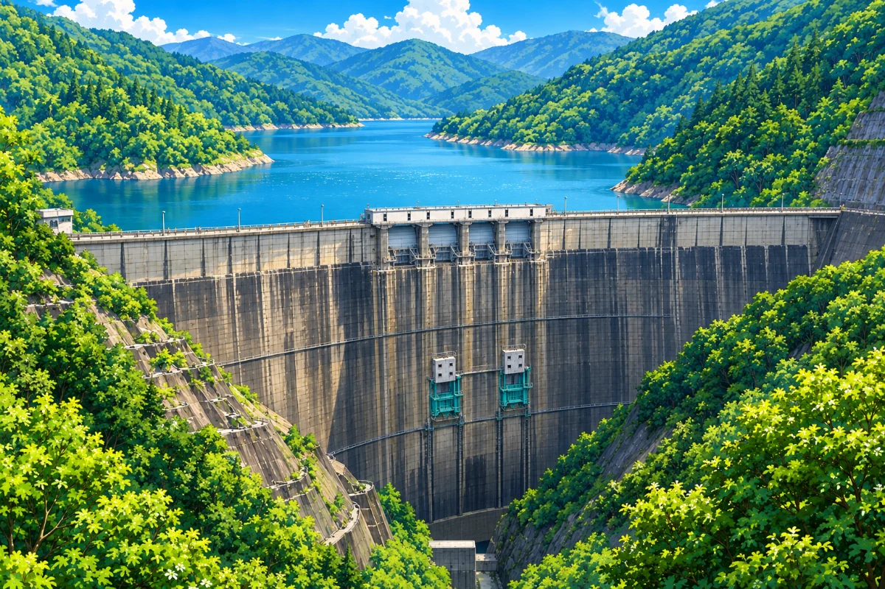

真名川ダムまながわだむ
九頭竜川水系 / 真名川 / 国交省

利水貯水率
78.1%使える水がどれだけ残っているかの割合です。ダムの容量のうち、水道・農業・工業などに使うために確保された分（利水容量）に対して、いま何%たまっているかを表します。渇水のときに注目される数字です。
有効貯水率
4.9%ダムの容量全体に対して、いまどれだけ水が入っているかの割合です。利水容量に加えて、洪水にそなえて空けておく容量（洪水調節容量）も分母に含みます。洪水期は上側を意図的に空けて運用するため、低い値になるのが普通です。そのため利水貯水率が100%でも、有効貯水率は低いことがあります。
2026年9月11日 00:00 観測の値です（このページの生成: 2026-09-11 00:09 JST）
| 観測日時 | |
|---|---|
| 所在地 | 福井県大野市下若生子26字 |
| 水系 / 河川 | 九頭竜川水系 真名川 |
| 管理者 | 九頭竜川ダム統合管理事務所 |
| 貯水位 | 336.10 m |
| 貯水量 | 4899 千m³ |
| 全流入量 | 9.41 m³/s |
| 全放流量 | 3.64 m³/s |
| 緯度 / 経度 | 35.918083 / 136.541918 |
行ったら、こんなのもあります
◆ 集めるダムカード
真名川ダムのダムカードは、ダムのそばの真名川ダム管理支所で配布しています。
- 配布場所
- 真名川ダム管理支所（福井県大野市下若生子25字水谷1-36）
- 時間
- 9:00〜17:00（土・日・祝日も配布。玄関のインターホンで）
- 条件
- ダムへの来訪者のみ、1人1枚。無料
- 問い合わせ
- 0779-64-1011
配布時間・配布休止日は変わることがあります。
国土交通省 近畿地方整備局 九頭竜川ダム統合管理事務所 → 2026年9月11日 確認
■ 見るダム見学
真名川ダムの一般開放エリアは、事前申込なしでいつでも自由に見学できます。エレベーターで堤体の中に入る「堤体内見学」は、3日前までの予約制です。
- 一般開放エリア
- 自由見学・事前申込不要（堤頂道路など）
- 堤体内見学
- 見学希望日の3日前までに予約。平日9:00〜16:00（年末年始12/29〜1/3を除く）。30分・60分のコースあり
- 堤体内の気温
- 1年を通しておよそ14℃（体温調節しやすい服装で）
- 問い合わせ
- 真名川ダム管理支所 0779-64-1011（受付 平日9:00〜17:00）
堤体内見学は点検・工事・降雨などで急に中止することがあります。実施状況は事前に電話で確認してください。ダム湖は麻那姫湖です。
国土交通省 近畿地方整備局 九頭竜川ダム統合管理事務所 → 2026年9月11日 確認
時間・期間・料金は変わることがあります。出かける前に、上の公式ページでお確かめください。
このページの情報について
ダムの基本情報
—
貯水率データ
国土交通省 川の防災情報ホームページ（https://www.river.go.jp/kawabou/pcfull/tm）を加工して作成
観測所：事務所コード 22099 / 観測所コード 2（観測所ID 2209900700002）
この観測所での分類：九頭竜川水系 真名川